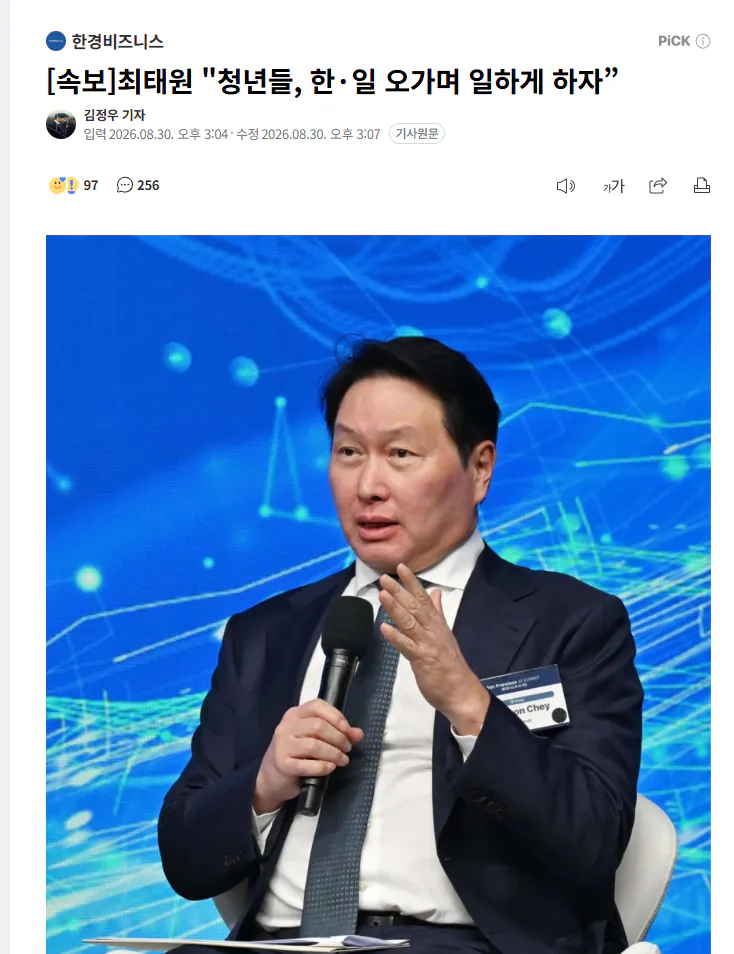
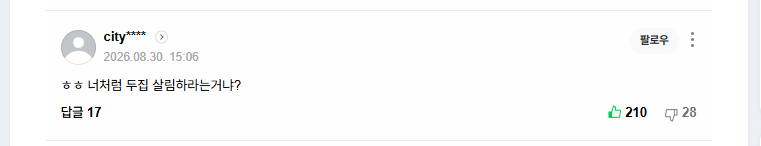

뭐 일하게 만들겠다 면 말할수도있긴해
근데 일하라고 해라 고 지는 암것도 안하면 걍 뚫린입이라고 툭툭던져보는것밖엔
요약하면 인건비 후려치고 판매시장 확대하겠다는 말 아니냐ㅋ
합작은 라인꼴날듯
라인이 뭔 지랄을 했는데ㅋㅋㅋㅋㅋ
반도체 싸이클 왔다고 목소리내는거 같은데...
떡상후에 직원들 약속한 돈 안줄려고 한거나 쪼개기상장 해대는거 보면 그냥 하던거나 똑바로 하쇼 소리만 나옴 ㅋㅋ
전라도에 투자하느니 일본이라니ㅋㅋ
해외에 일자리 만드는 해외 투자가 국내에 일자리 만드는 국내 투자보다 낫다는 소리냐?
이건 도대체 어느 세상에서 가져온 논리임ㅋㅋ 명예 일본인이 아닌 이상 할 수 없는 발상 아니냐
근하하하하하하
반도체 소부장 운송비는 저렴한데 반대로 인건비가 졸라 싸서 그럴지도
국내 일본 소부장 업체 주축이 일본인 근로자인데 페이 절대 저렴하지 않음 우리보다 평균 연봉 높다
어쩔수 없는게 특수한 일부 직군을 제외하면 한국이랑 비교할때 인건비가 절반밖에 안됨
물론 일본 특성상 정직원 장기채용이 강제되는 모습도 있지만 퇴직금이 의무사항이 아니기에 상대적으로 인건비에 대한 부담이 적은편임
지금 구마모토 처럼 천재지변에 따른 생산중단은 있을 수 있지만 초기 투자에 대한 지원금이라던가 토지보상이라던가 여러가지 조건들을 고려했을때
한국내 공장 설립은 더이상 매력적인 선택지가 아니긴 함
독일이 히틀러 추모하며 나치 시대 그리워하면 EU가 애초에 만들어지기나 했을거 같아?
집주나?
저 반도체 일본으로 보내야한다는 그 애초에 시작한 자들 논리를 보면 저거 ㅋㅋ 말 하기 쉽지 않은거 아님? 마치 대만이 반도체 미국 일본으로 이전하면 미국이 바로 대만 버릴꺼라고 하는데 저거 일본 반도체 병참기지설아님?? 지지하고싶지 않은 의견인데 우리나라선 잠잠하네 ㅋ
투집살림
아예 틀린말은 아닌데..행보가 좀 ...
어케든 자기돈 지키려고 주주들 돈 안주려고 직원 돈 안주려고 온몸 비틀기 하던사람이 하는소리라
1첩주면 생각해봄